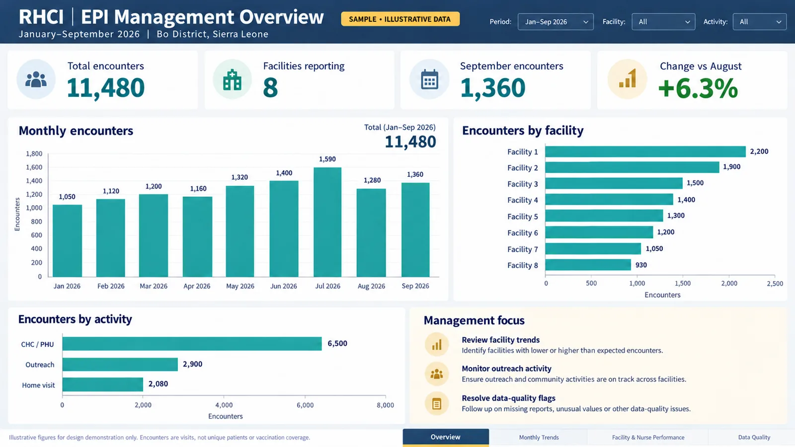
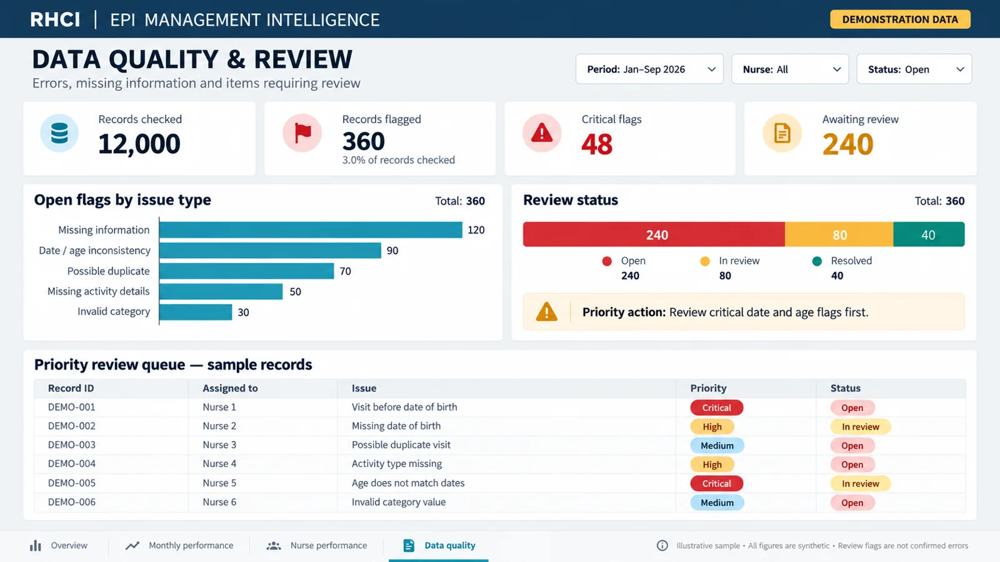

EPI reporting dashboard
A Power BI report that turns each monthly Survey123 immunisation export into the same trusted view, for readers who need very different levels of detail.
- Power BI
- Survey123
- Excel
- Data modelling

The challenge
Immunisation visit data at RHCI is collected in Survey123 and exported as files. Every month a new export arrives. Rebuilding a report by hand each time is slow, easy to get wrong and impossible to compare month to month. The numbers also need to be trusted by very different readers, from a nurse checking her own facility to a donor reading a summary.
Who the report is for
| Reader | What they need to see |
|---|---|
| Nurses and facilities | Their own activity and what is outstanding |
| RHCI management | Programme-wide results and which facilities need support |
| DHMT | District-level summaries in a familiar shape |
| RHCI Board and donors | Headline results and trends over time |
The approach
- 1Monthly Survey123 export
- 2Checks and cleaning
- 3Data model
- 4Measures
- 5Report pages by audience
- 6Validation against source
The report covers 1 January 2026 to date and is designed to extend as each monthly export arrives. Instead of starting with charts, the build starts with a clean data model and a small set of trusted measures, then adds pages for each audience.
Built in checkpoints
The work moves through three staged checkpoints, and each one is reviewed before the next begins.
- Foundation: the data model and structure, so every later page rests on the same tables.
- Build: measures and report pages for each audience.
- Validation and handover: figures checked against the source export before anything is released.
Data quality first
A dashboard is only as good as the records behind it. The report builds on the data quality work I carried out on the nurse datasets, which checks GPS points, dose sequences, duplicates and village names before numbers reach a chart. That work is its own case study.

Where it stands
The report is built. Its structure is designed so that adding a new month means dropping in the new export rather than redesigning pages.
All design mockups
Sample data These screens show the design using invented, anonymised data. Real programme data stays with RHCI.